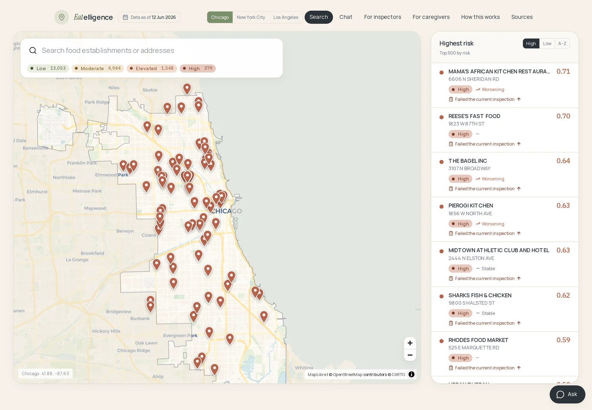
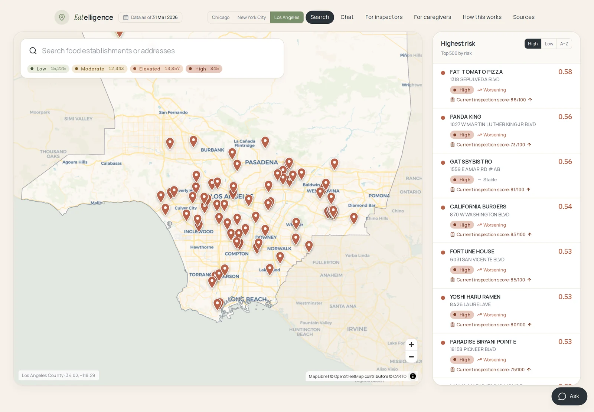
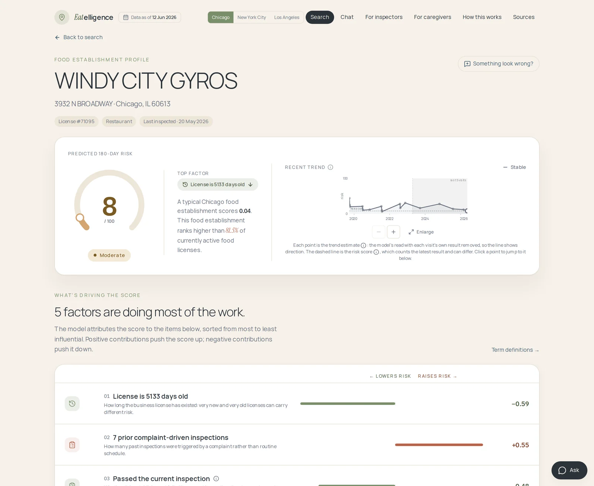
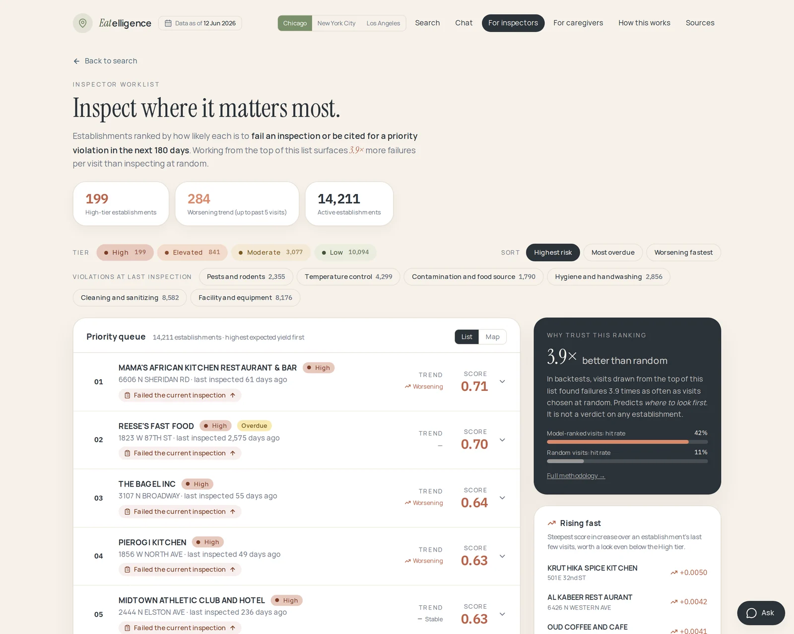
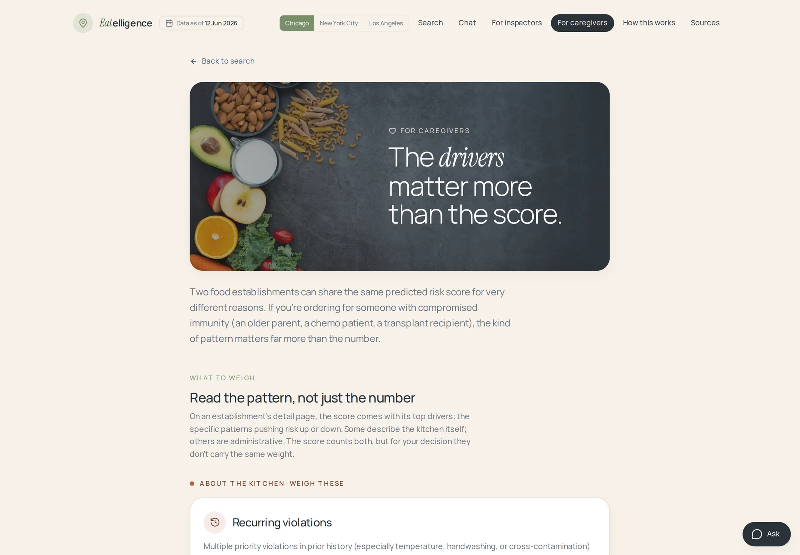
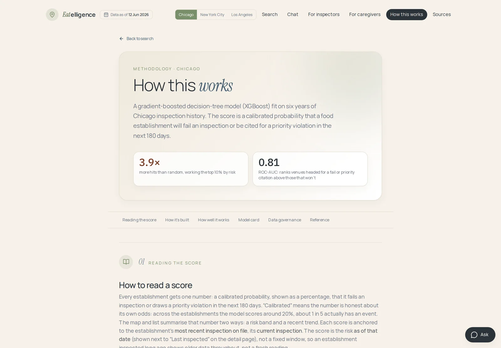
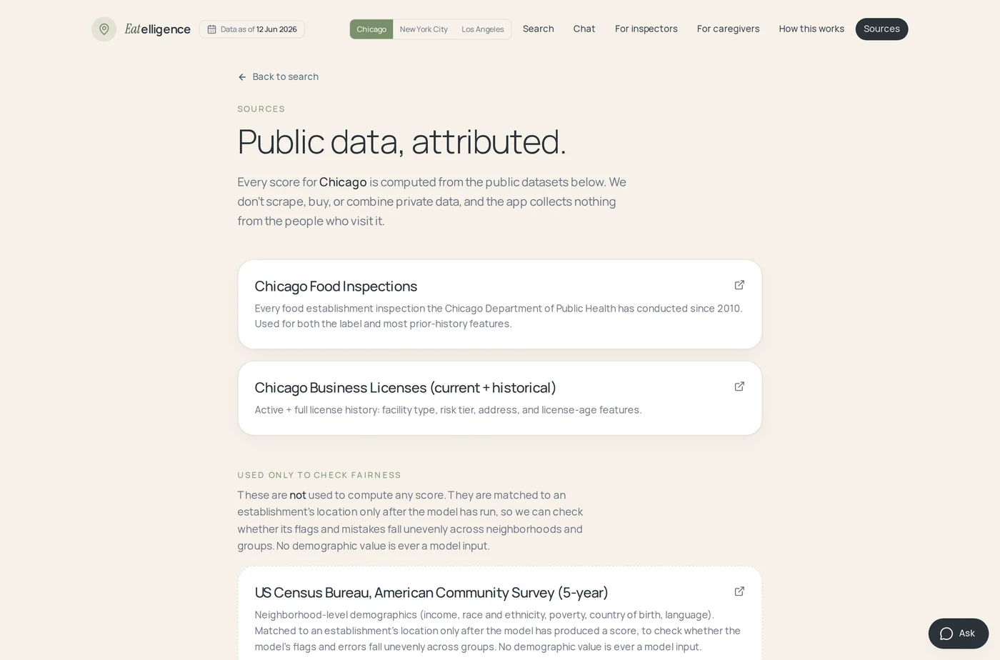
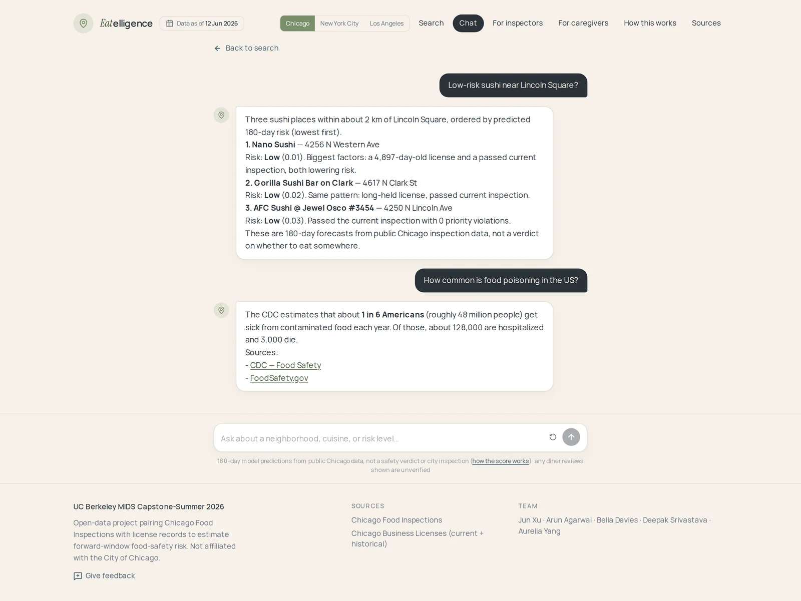

UC Berkeley MIDS · W210 Capstone · Summer 2026
A predictive, explainable food-safety risk layer.
Eatelligence scores every licensed food establishment in Chicago, New York City, and Los Angeles for the risk of a bad inspection outcome in the next 180 days, using only public data. Every score comes with the factors that drove it. When there is no record, it says so instead of guessing.

Every licensed venue pinned and colour-coded by tier, with search and filter chips, next to a list ranked by predicted risk.
Problem space
Public data is fragmented and historical. It never says what happens next.
48 million Americans fall ill from foodborne disease every year, leading to about 128,000 hospitalisations and 3,000 deaths. Cities already publish the inspection records that hint at where the next problem is. What they publish is a backward-looking log: it answers what happened, never whether a place is becoming riskier.
Resident and diner
"Is this place risky right now?"
A pass from eight months ago says little about today. The public sees one snapshot with no trend and no explanation, and someone choosing for an immunocompromised person needs the difference between a temperature violation and a paperwork violation.
Inspector and health department
"Which places should we inspect first?"
Visits are finite and largely scheduled on a routine cycle. The order of the queue decides how many problems get found, and cadence-driven order treats every establishment the same.
Our mission
Point limited inspection staff at the highest-risk targets, and help protect vulnerable diners from preventable illness. Inspections, complaints, and licence records across three cities, unified into one explainable risk score per venue.
Research
What diners and inspectors told us.
We went looking for how people actually talk about this, in public forums and in interviews, before deciding what to build.
City residents
"Yep, if it's not an A I'm not going in."
New York City diner, r/AskNYC (2022)
"Seeing cockroaches is enough for me to never go back."
Chicago consumer, CBS Chicago reader discussion
"My wife only eats at A-rated restaurants. If it's not an A she won't go in."
Los Angeles diner, r/FoodLosAngeles
Verified health inspectors
"We know that people clean when they know we are coming."
Health inspector, verified Reddit AMA
"People don't wash their hands, even when they are being inspected."
Health inspector, verified Reddit AMA
"A restaurant had sewage leaking into their ice machine. They were still serving the ice."
Health inspector, verified Reddit AMA
The interview that changed the framing
A health-department interview pushed back on our first positioning. An inspector's goal is to promote compliance and protect public health, not to maximise citations. So the product is framed around earlier prevention and better resource allocation, never around catching people out. The worklist is a ranking of where to look first, and it says so on the page.
A second theme was localisation: every city is different, and a policy that works in Chicago might not fit a suburban village. That is why each city gets its own model, its own target, and its own vocabulary rather than one blended score.
The product
Three questions, every venue.
Every surface, the map, the detail page, the inspector worklist, and the chat agent, exists to answer the same three questions.
Is predicted risk elevated?
A calibrated probability of a bad inspection outcome within 180 days, shown as a 0 to 100 score and a named tier. Tiers are set relative to each city's own base rate, so "High" means the same thing everywhere.
Improving, worsening, or stable?
A second model, deliberately blind to the latest visit, fits a trend over recent inspections. The risk model is dominated by what just happened, so it cannot speak to direction. This one can.
What's driving the signal?
TreeSHAP decomposes every score into named, human-readable drivers. The same waterfall ships on every establishment detail page, so the answer is the why, not just "risky".
Live demo
One dataset, four ways in.
The web app is a fully static site: search, map, filtering, and the detail page all run in the browser against precomputed scores. It never calls the model while you are looking at it.
Map and search
Substring search across names and addresses, tier filter chips, and a map clamped to each city's real boundary. The ranked list and the map stay in sync, so you can move between "show me the worst" and "show me near here" without losing your place.
- Chicago, New York City, and Los Angeles, switchable in one click
- Risk tier, trend, and top driver visible without opening a record
- Closed establishments greyed out but still reachable

Establishment detail
Risk and trend score, top drivers, and inspection history on one page. The driver panel shows signed contributions as diverging bars, and a second table reconciles them exactly to the number on the gauge, so nothing about the score is a black box.
- Diverging driver bars: raising risk right, lowering risk left
- A worked walkthrough from model intercept to final probability
- Every inspection on record, with violation counts and outcomes

Inspectors page
A priority queue that answers one question: where should the next visit go? In backtests, visits drawn from the top of this list found failures 3.9 times as often as visits chosen at random, a 42 percent hit rate against 11 percent.
- Sort by highest risk, most overdue, or fastest worsening
- Overdue tags, violation filters, and a rising-fast list
- Framed as a ranking, never as a judgment on any establishment

For caregivers
Guidance for someone choosing on behalf of a person with compromised immunity, where the drivers matter more than the score. The page separates kitchen signals, which describe how a kitchen actually operates, from administrative signals, which the model uses but which say nothing about the kitchen.
- Weigh more: recurring priority violations, pests, temperature control
- Weigh less: time since last inspection, licence age
- Education only, and never a substitute for medical advice

How this works
The model, the features, and the methodology, written out per city. Trust is the feature, so the page publishes the split windows, the operating points, the weakest slices, and a worked example of how one establishment's score adds up.
- A model card with the served estimator and its training windows
- The operating-point table, including where the model is weakest
- Data governance and a link to every source dataset

Demo
The whole thing, end to end.
A walkthrough of the live product: search a city, open an establishment, read the drivers, and ask the agent a question.
Demo video goes here
Drop the recording at site/assets/media/demo.mp4, then
swap this block for the commented-out player in
site/index.html. A poster frame at
site/assets/media/demo-poster.webp is optional but
stops the player rendering as a black rectangle before playback.
The data
Three cities, all public.
Everything comes from city open-data portals. Nothing is scraped, bought, or combined with private data, and the app collects nothing from the people who visit it. Every dataset behind a score is listed and linked in the product itself.

| City | Sources | What is covered | Train / validation / test |
|---|---|---|---|
| Chicago Primary |
Inspection history and business licences, joined on the licence number | 69% restaurants; 31% grocery, schools, daycares, hospital kitchens, bakeries, caterers, mobile vendors |
Jan 2019 – Jun 2024 (79,268) Jul 2024 – Jun 2025 (16,564) Jul 2025 – Dec 2025 (7,008) |
| New York City | Inspection history; 296,235 raw violation rows collapsed to about 51,800 inspection events | Restaurants only, across 33 cuisines |
Jul 2022 – Sep 2024 (35,190) Oct 2024 – Mar 2025 (8,773) Apr 2025 – Jun 2026 (9,456) |
| Los Angeles | Inspection and violation history, joined on the inspection serial number | 75% restaurants across 30 cuisines; 25% retail food markets |
Apr 2023 – Jun 2024 (36,900) Jul 2024 – Dec 2024 (7,374) Jan 2025 – Mar 2026 (7,197) |
Every city grades differently
Chicago records Pass, Pass with Conditions, or Fail with violation codes. New York issues a letter grade from a points score where fewer points is cleaner. Los Angeles issues a letter grade from a 0 to 100 score where more points is cleaner, the opposite direction.
One hazard, three code systems
A rat in the kitchen is code 13 in Chicago, 04K in New York, and F023 in Los Angeles. We built a crosswalk that maps all three onto eleven shared hazard themes with a severity tier, so a violation means the same thing across cities.
Chicago needed real cleaning
Establishments that closed and reopened created duplicate ghost licence entries for the same physical venue. Left alone, these split one establishment's history in two and hid its prior failures from the model.
Base rates differ, so tiers are relative
Bad outcomes are far more common in New York than in Los Angeles, so a fixed probability cutoff would mean something different in each city. Instead the tiers are defined against each city's own base rate: Low is under half the base rate, Moderate is a half to one times, Elevated is one to two times, and High is two times or more. Base rates are 14 percent in Chicago, 38 percent in New York, and 6 percent in Los Angeles.
Architecture
Two languages, joined at a JSON seam.
A Python batch pipeline pulls the public data, builds leak-guarded features, trains and calibrates a model, and scores every establishment. It writes a small set of JSON files. The web app and the agent read only that JSON. This is permanent by design, not a staging step.
![System architecture in three columns. Left, the offline data sources and prediction pipeline: Chicago and New York City via SODA APIs and Los Angeles via ArcGIS Hub, each supplying food inspections, business licences and 311, feeding a Python batch-scoring pipeline built on pandas, DuckDB, scikit-learn and XGBoost that does feature engineering, a temporal train, validation and test split, and SHAP. Its model recipe is a logistic-regression baseline plus calibrated XGBoost with TreeSHAP explainability, producing a risk score and a forecast trend shared across all three cities. That writes scores.parquet, which parquet_to_json.py converts to scores.json per city. Centre, AWS cloud infrastructure: an S3 bucket holding raw and served JSON behind a CloudFront CDN, Bedrock AgentCore running the Nova Lite chat agent and a sandboxed Code Interpreter for charts, a Lambda proxy from the agent to the load balancer, and GitHub Actions OIDC deploys for the web app and the agent. A vertical band across this column reads: the permanent contract, the app and agent only ever read pre-computed JSON, the model never runs at request time. Right, the end-user app and agentic AI platform: a Next.js 16 web app on Amplify and CloudFront offering search, map, restaurant detail, methodology and chat; the Eatelligence chat agent on Bedrock AgentCore with Nova Lite, city-aware, answering Chicago-only restaurant risk plus general food-safety education with cited sources and on-demand charts; and agentic AI tools that read the same scores.json and never call the model. A banner along the bottom lists three takeaways: batch-scored rather than real-time, multi-city on one pipeline, and rigour over raw performance.](assets/media/architecture.webp)
Scroll the diagram sideways on a narrow screen.
The rules that do not bend
Four constraints, held across every change.
No inference at request time
The app and the agent read precomputed scores. Nothing calls the model on a page load, so there is no live inference service to keep running and no way for a page view to change an answer.
Chronological splits only
Train on the past, validate on the middle, test on the most recent window. Never a shuffled split, in any city.
Every prior feature is guarded
Any feature describing an establishment's past is computed with an explicit cutoff at the prediction date, so the model can never read a fact that had not happened yet.
Both metrics gate a promotion
A candidate replaces the served model only if it holds up on ranking quality and on calibration together. A win on one alone is not a win.
The same pipeline runs against a laptop's local disk or against cloud storage; one environment variable is the only difference. Training is offline, scoring is batch, and publishing is a file copy.
Model architecture
Three architectures tried. The shallow one won.
The signal here is low-order and carried by a handful of features, which is exactly the regime where gradient-boosted trees beat everything fancier. Depth-3 trees outperformed depth-6, and a multilayer perceptron found no deeper interactions to exploit because there were none to find.
Baseline
Logistic regression
The classifier the original Chicago model used, kept as the yardstick every candidate has to beat. Every coefficient is readable, so it doubles as a sanity check on what the data is actually saying.
Served
XGBoost
Built for tabular data: non-linear interactions, native handling of missing values, and categorical splits without one-hot blowup. Run shallow and monotone-constrained, then sigmoid-calibrated.
Explored
Multilayer perceptron
Tried and rejected. There are no deep interactions to find, and the depth-3-beats-depth-6 result says the same thing from the tree side. Several tabular deep-learning families were also tested; none displaced the served model.
| Setting | Chicago | New York City | Los Angeles |
|---|---|---|---|
| Trees / max depth | 300 / 3 | 400 / 2 | 400 / 3 |
| min_child_weight | 10 | 20 | 5 |
| Features | 36 | 32 | 28 |
| Training prevalence | 14.5% | 35.6% | 4.6% |
| Positive class weight | 5.9× | 1.8× | 20.6× |
Imbalance by weighting, never by resampling
Positives are rare, so the positive class is up-weighted through
XGBoost's own scale_pos_weight. Synthetic
oversampling is deliberately not used: it inflates
precision-recall AUC on a chronological split, which would make
every subsequent comparison meaningless.
Calibrated, then explained
Re-weighting distorts the output probabilities, so sigmoid calibration re-grounds them afterwards. That is what makes the 0 to 100 score mean something rather than just rank. TreeSHAP then decomposes each calibrated score into the named drivers you see on a detail page.
Two models, not one
The risk model is dominated by what just happened at the most recent visit, so it cannot speak to direction. A second trend model is deliberately blind to that latest inspection, which is what lets the product say "improving" or "worsening" rather than only "high" or "low".
What each city taught us
Chicago: dropping postal code and facility type improved accuracy and removed bias risk at the same time. New York: regularising harder, to depth 2, stopped the overfitting and lifted the operating point to 1.8×. Los Angeles: roughly 98 percent of inspections end in an A grade, and that base rate is the ceiling.
Features we tested and refused to ship
The published Chicago forecasting model is the direct precedent for this work, and we kept its family of per-facility history features. We did not keep everything.
Inspector identity was its single most influential feature, and a later hindsight audit found it unfairly changed predicted risk. A venue cannot choose who walks through the door, so it is excluded. Socio-demographic features are excluded for the same reason: in this literature, part of the accuracy gain simply is the bias.
Weather turned out to be redundant. A three-day high-temperature feature measured against plain month and quarter proxies moved precision-recall AUC by −0.0036. An alcohol and tobacco licence flag gained +0.0014 on precision-recall AUC but cost −0.0030 at the operating point that matters, so it was not shipped.
Why a 180-day window, when longer windows score better
Stretching the label to 365 days raises precision-recall AUC from 0.344 to 0.498, and predicting only the next routine visit raises it to 0.604. Both look like large wins and neither is one. Those targets have far higher base rates, so the score rises while the actual ranking power falls: lift over random drops from 3.9× to 1.68× and then to 1.28×. The 180-day window is the one that ranks an inspector's queue best, which is the job.
Web app
Next.js with the App Router, React, and TypeScript in strict mode, exported as a fully static site behind a content delivery network. The map is MapLibre over OpenStreetMap tiles.
Agent
A Strands agent on Amazon Bedrock AgentCore, reached through a signing proxy so the runtime is never publicly exposed. Guardrails and evaluations gate every deploy.
Conversational AI
A chat surface that refuses to guess.
A conversational search assistant for predicted food-safety risk. Every tool reads the active city and answers only from that city's data. It also answers general food-safety questions from a curated list of public-health sources with a link you can check. There is no web search and no news source.
Eight tools, one rule
The agent never calls the model at request time. Its tools read the same precomputed scores the web app reads. If an establishment is not in the batch run, the answer is an explicit "no record", not an estimate.
- Find establishments in an area, then attach their published scores
- Explain one establishment's drivers and inspection history
- Resolve a name to its authoritative record, and ask when a name is ambiguous
- Link out to the city's own inspection records
- Answer a general food-safety question with a cited public-health source
- Chart the city's scores by writing code that runs in a network-isolated sandbox

What it will not do
- Give an eat or do-not-eat verdict
- Answer a personal medical question
- Score a city it does not cover
- Invent a score for an establishment with no record
When it asks first
- Several establishments share the name you gave
- It cannot place the neighbourhood you named
- Before pulling third-party reviews, which are never a score input
How it is tested
- Deterministic gates, free to run, on every pull request: faithfulness against the published data, name lookup resolving to the correct record, and citations checked against an allow-list plus live link verification
- A judge model grades what string matching cannot: tone that stays calm and empathetic toward sick or vulnerable users
Evaluation
Measured on data the model never saw.
Each city is a separate model with its own target, trained and evaluated on its own chronological split. Precision at 10 percent is the operating point that matters: a city inspects a fixed number of venues, so that is the number that maps to the job.
| City | Base rate | Precision at 10% | Lift | PR-AUC | Trees / depth |
|---|---|---|---|---|---|
| Chicago | 11% | 42% (295 / 701) | 3.9× | 0.382 | 300 / 3 |
| New York City | 41% | 74% (699 / 946) | 1.8× | 0.615 | 400 / 2 |
| Los Angeles | 9% | 22% (157 / 726) | 2.5× | 0.187 | 400 / 3 |
Read the PR-AUC column carefully
Area under the precision-recall curve is bounded below by the base rate, so it is not comparable across these three rows. New York's 0.615 against a 41 percent base rate is a weaker result than Chicago's 0.382 against 11 percent, not a stronger one. The lift column is the fair cross-city comparison. The three cities also predict different targets: Chicago predicts a failed inspection or a priority violation, while New York and Los Angeles predict a drop in letter grade, on scales that run in opposite directions.
The use case that works
A ranked worklist for inspectors. The top 10 percent of predicted risk catches up to 3.9 times what random inspection order finds on held-out data. That is the number worth optimising, more than another point of area under a curve.
Where the ceiling is
More diverse datasets did not mean better signal. The gains came from feature engineering on the datasets that mattered. Weather, building permits, menu and cuisine enrichment, and chain membership were each tested and each came back null.
Trees beat fancier architectures
Modern networks do not beat boosted trees on tabular data with a handful of strong features. A multilayer perceptron and several deep-learning families were tested; none displaced XGBoost.
Edge cases we publish rather than bury
Chicago is nearly blind to brand-new restaurants. On venues that have never failed, PR-AUC drops to 0.13 against a 0.38 headline.
New York's Low tier still sees 23 percent actual failures, which is why the interface says "lower risk for New York" and never "safe".
Los Angeles false alarms cluster geographically: the false-positive rate varies by 0.14 across postal codes, even though postal code was dropped as a feature. That is an open fairness finding, and it is on the site rather than in a drawer.
Responsible AI
What we checked, and what we found.
A model that ranks businesses for inspection can concentrate enforcement on particular neighbourhoods or communities. We built a reusable fairness audit and ran it on all three cities before treating any of this as finished.
Demographics are measured, never modelled
Census data is joined to an establishment's location only after the model has produced a score, purely to check whether flags and errors fall unevenly. No demographic value is ever a model input, and none appears in the published data or the app.
Facility type was removed on purpose
Cuisine and facility-type fields correlate with the ethnicity of an establishment's owners and customers. Using them would let the model encode that correlation as risk, so they are excluded from the feature set and from the agent's chart filters.
Three lenses, not one
Each axis is tested for statistical parity, for equal error rates, and for calibration, each with bootstrap confidence intervals. A gap counts as a finding only when it is both material and statistically confident.
The finding
Across all three cities, every demographic finding was parity-only: flag rates differ across groups, but error rates and calibration do not. That is what you expect where true failure rates genuinely differ. One exception is being followed up: a calibration gap across cuisines in the New York model.
Limits we are explicit about
A risk score is a prediction about the public record, not a verdict on a business and not a health judgment. A high score means the patterns in an establishment's history resemble those that have historically preceded a bad outcome. It does not mean the food is unsafe today, and the product never tells anyone where to eat.
The data covers all licensed food establishments, not only restaurants, so a large share of what is scored in Chicago is grocery stores, school and hospital kitchens, bakeries, and caterers. Inspection records reflect where inspectors have already been, so historical enforcement patterns are present in the labels. Mitigation work, including per-group thresholds, was priced but deliberately left as analysis rather than applied to the served model, because changing the operating point is a policy decision rather than an engineering one.
Closing
With more time.
Automated weekly refresh
Schedule the incremental ingest that already exists, add drift detection, then retrain, rescore, and republish on a timer. The capability is built; the scheduler is not.
Accounts and saved sessions
A database and the surrounding infrastructure so inspectors can keep chat history and saved worklists between shifts.
More cities, real users
Onboard further cities and demo to city health departments to power live inspector worklists, closing the loop: departments publish new results, we retrain and republish.
Build explainable food-safety intelligence from public data, helping diners, inspectors, and communities navigate risk with confidence.
The team
Five people, one capstone.
Master of Information and Data Science, UC Berkeley School of Information. W210 capstone, Summer 2026.
Acknowledgements
Our instructors and advisors, for weekly feedback that shaped the target, the evaluation, and the final presentation. The responsible-AI review of our trust, privacy, and governance practices. And the friends and target users who tested the app and the agent.
Related work and attributions: the original Chicago Department of Public Health food-inspection forecasting model (2015) and its 2019 hindsight audit; the FINDER paper on search-location signals; CDC foodborne-illness estimates; and the Chicago, New York, and Los Angeles open-data portals.